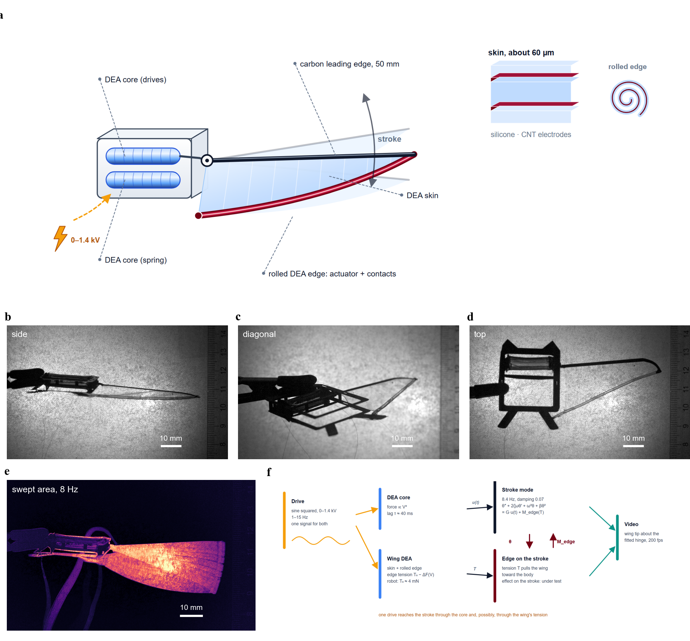
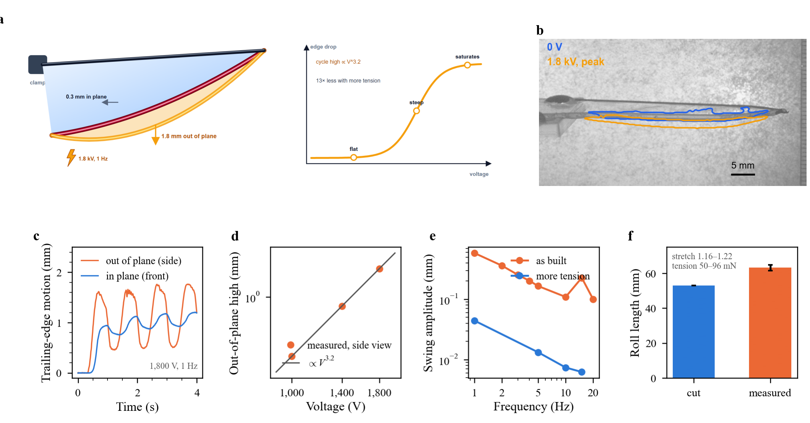
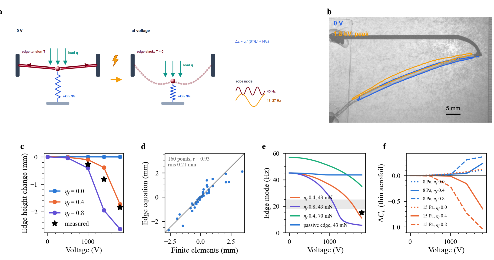
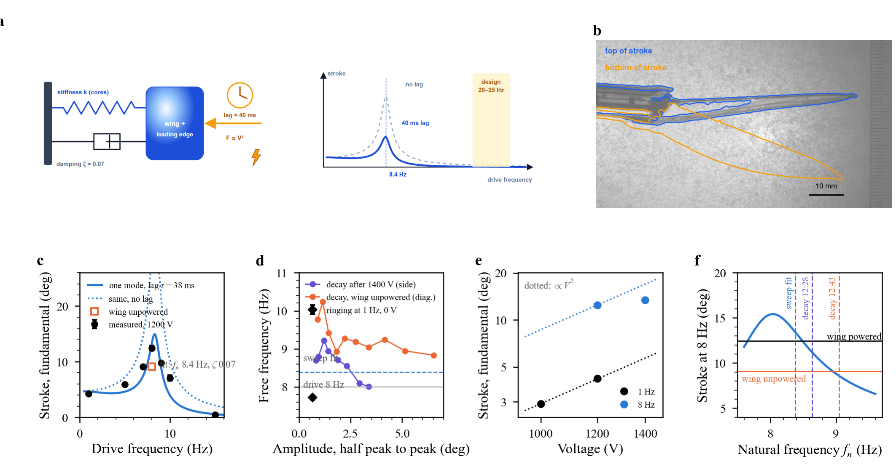
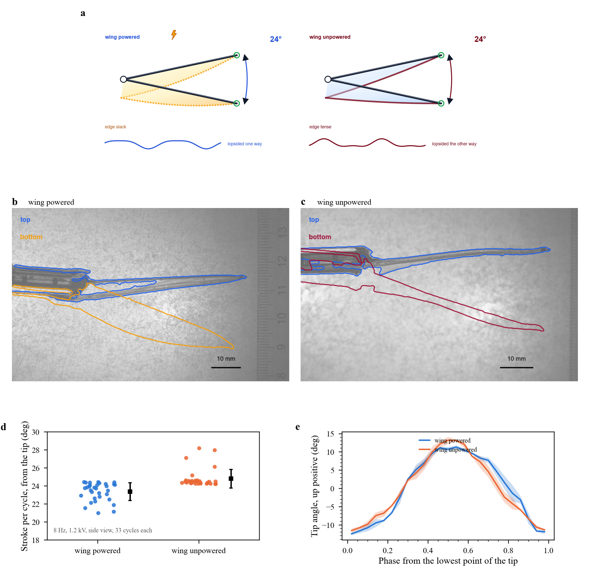
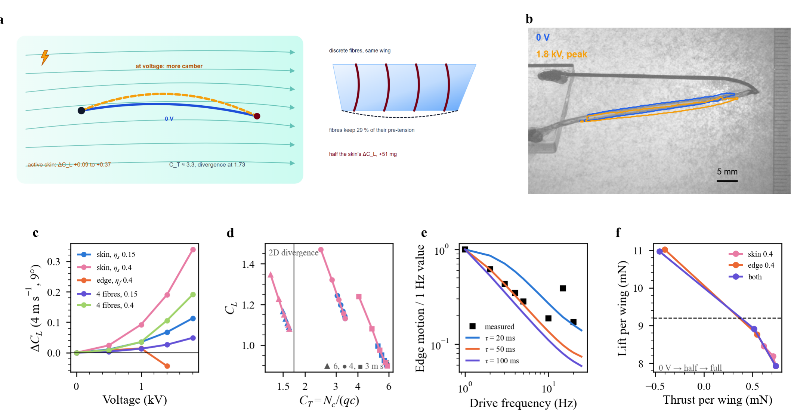
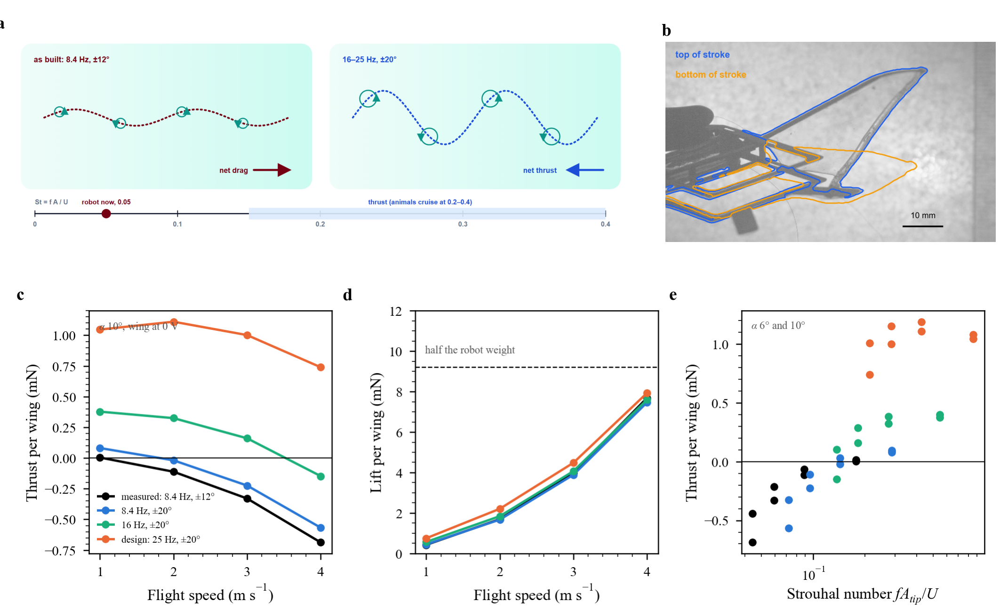
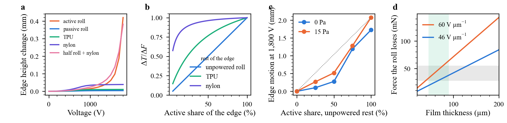
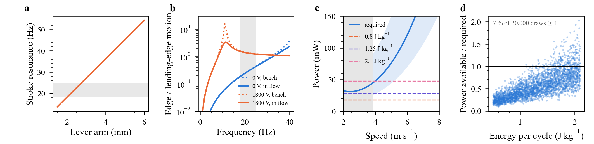

Active membrane wings / Results
Results
B-cube, a flapping robot with an all-DEA wing: the main findings in eight figures, as they would go in a paper, with conclusions and the tests that settle what is open. Data on Experiments, design on Robot, models on Wing in air.
Main findings
- The robot is built and flaps. DEA core, transmission and an all-DEA wing (active skin and rolled active trailing edge) flap at resonance: 24.3 ± 1.0° peak to peak at 8 Hz and 1200 V, tip 23 mm (Fig. 1, 4). Measured.
- The wing moves, mostly out of plane. On the bench, 1.8 mm out of plane at 1800 V and 1 Hz, against about 0.3 mm in plane; the cycle high grows about as $V^{3.2}$ (Fig. 2). Measured.
- The mechanism is a tension switch. The rolled edge loses its tension and the skin alone cannot hold it: two springs in parallel, the edge string ($8T/L^2$) and the skin ($N/c$). This explains the jump, the saturation, and why extra tension cut the motion about 13× (Fig. 3). Model fitted to one wing.
- Voltage tunes the edge mode, from about 45 Hz at 0 V to 11–27 Hz at 1.4–1.8 kV; the 15 Hz bump of the bench sweep fits a nearly slack edge (Fig. 3). Model, one measured point.
- In air, the skin matters too. Only about 15 % of the skin's Maxwell stress stays as a drop in chord tension, but the wing sits near membrane divergence ($C_T \approx$ 3.3 at 4 m/s), so the active skin alone adds $\Delta C_L$ +0.09 to +0.37 and always settles. Discrete rolled fibres on the same wing give half of it for 51 mg more. A fully slack edge has no steady state at 4 m/s and faster (Fig. 7). Model.
- The DEA force lags the voltage by 40–50 ms, found twice: the fall of the wing's bench motion from 1 to 5 Hz (50 ms) and the height of the robot's resonance peak (38 ± 13 ms). At 25 Hz, any on/off timing acts as half the voltage held: voltage is a slow trim (Fig. 4, 7).
- The robot's resonance is 8.4 Hz, not 20–25 Hz, with a damping ratio of 0.07 (Q about 7 in still air). It is not fixed: the spring softens with stroke (9 Hz near 1°, 8 Hz at 3.4°) and it moved by 5 % between sessions. At 1 Hz the stroke goes as $V^2$; at resonance 1400 V adds only 8 % (Fig. 4). Measured.
- Powering the wing changes how the robot flaps. At 8 Hz and 1200 V the stroke is 24.3 ± 1.0° with the wing powered against 20.2 ± 0.7° with only the core powered (+20 %, 35 cycles each), and the cycle changes shape: unpowered, it carries 2.4× more 2nd harmonic although it is smaller, which a drift of the natural frequency cannot produce (Fig. 5).
- A wing mode explains it. Harmonic balance gives one real spring asymmetry for all powered runs and a reversed, complex one for the unpowered run: a resonance near 16 Hz. A wing mode at 17.0 ± 1.1 Hz, fitted to five clock-free numbers, reproduces the unpowered size and 2nd harmonic within 1 s.d. The bench wing model puts that mode at an edge tension of about 4 mN, which the roll loses at 1.2 kV: voltage slackens the edge, the mode leaves the band, the stroke grows (Fig. 6).
- At the measured kinematics the flapping makes no thrust. Thrust needs $St \gtrsim 0.15$; the robot is at 0.05 at 4 m/s, so it needs 16–25 Hz. Lift comes from the forward speed (Fig. 8). Even at the design point, free flight needs about 2 J/kg per cycle from the cores, about twice what the bench gave (Fig. S2). Model.
Fig. 1. B-cube and its all-DEA wing

B-cube makes the wing itself an actuator: the whole skin and its rolled trailing edge are DEAs on the same drive as the core. The rolled edge does two jobs, carrying the tension that shapes the wing and the electrode contacts of a film too thin to connect otherwise. One drive therefore reaches the stroke along two paths, through the core and through the wing's tension, and the rest of the figures resolve how they couple.
- a: the robot in the stroke plane: two rolled DEA cores (one drives, one is the spring) turn the carbon leading edge about a hinge through a lever; the DEA skin spans the wing, and its rolled DEA edge, which also carries the contacts, is tied to the body. Right: the skin stack (two carbon-nanotube electrodes, one active silicone layer) and the rolled edge.
- b–d: the robot in the side, diagonal and top views of the high-speed camera, 200 fps, scale bars 10 mm.
- e: area swept by the wing at 8 Hz (brightest minus darkest pixel over the run).
- f: the system as modelled: one drive signal powers core and wing; the core drives the stroke through a force lag; the edge tension sets a wing mode coupled to the stroke (red); the video records their sum.
Fig. 2. The wing on the bench

Voltage drops the trailing edge out of plane, 1.8 mm at 1.8 kV, six times more than it moves in plane. The response is not the smooth V² of an electrostatic actuator: it stays flat, rises steeply and saturates, and extra tension cuts it about 13-fold. That signature points to a change in how the edge is held, not to the skin pushing it.
- a: schematic: the wing clamped at its leading edge; at voltage the rolled edge drops out of plane (amber) far more than it moves in plane, with a flat, steep, saturating response.
- b: the wing on the bench, side view: its outline at 0 V (blue) and at the peak of a 1.8 kV, 1 Hz cycle (amber), traced from the high-speed video. The edge drops; the leading edge does not move.
- c: 1800 V, 1 Hz, sine squared from 0 V. Out of plane (side view) the edge swings between about 0.5 and 1.7 mm, with flat tops: the edge is slack for part of the cycle. In plane (front) it is smaller and lags.
- d: cycle high from the side, 0.28, 0.82, 1.84 mm. Slope 3.2 on log axes. Voltages were run in ascending order, so some may be wear-in.
- e: diagonal view, 1800 V. Falls about as $f^{-0.8}$ to 5 Hz, bump at 15 Hz, about 0.1 mm at 10 and 20 Hz. Pulling the thread further cuts it about 13× at 1 Hz.
- f: roll cut 52.94 mm (mask), measured 61.6–64.8 mm in the front view. With the P7670 fit ($C_1$ 42.8 kPa) and 60–87 µm film, 50–96 mN.
Fig. 3. Why: the edge goes slack

The edge is held by two springs in parallel, its own tension and the skin behind it, and at 0 V the tension is about 13 times stiffer. Voltage removes the tension; once the edge is slack only the soft skin is left, so the edge jumps and then saturates. The same tension sets the edge's own mode, which voltage pulls from about 45 Hz into the flapping band.
- a: schematic: the edge held by its own tension (maroon) and the skin (blue spring) under a load q; at voltage the tension is gone and only the skin holds it. Right: the equation and the edge mode moved by voltage.
- b: the same wing from the front: outline at 0 V (blue) and at the 1.8 kV peak (amber). In plane, the edge barely moves.
- c: finite elements of the built outline, flat, with its weight, roll pulled 6 mm. $\eta_f$ is the share of Maxwell stress the roll turns into lost force. The measured points sit between 0.4 and 0.8.
- d: $\Delta z = q_e/(8T/L^2 + N/c)$, with the roll's tension $T = T_0 - \eta_f n_f \varepsilon (V/H)^2 H w_a + $ (stretch from sagging). Three constants fitted on all 40 roll runs, 0–15 Pa: correlation 0.93, rms 0.21 mm.
- e: $f_e = \frac{1}{2\pi}\sqrt{(T(\pi/L)^2 + N/c)/(\mu_e + \rho t c/3)}$. Star: the bump measured at 15 Hz.
- f: $\Delta C_L = 2\int_0^\pi z'(\cos\theta-1)\,d\theta$ on the mid-span chord, uniform pressure. Dotted: passive edge, +0.1 from the skin. A rising edge washes the wing out, so at 15 Pa voltage removes lift.
Fig. 4. The robot flapping

The robot behaves as one resonator: the stroke peaks at 8 Hz, next to its natural frequency of 8.4 Hz, with a damping ratio of 0.07. The peak is half the height that damping allows because the DEA force lags the voltage by about 40 ms, the same order as on the bench. The resonance sits well below the 20–25 Hz the design assumed.
- a: schematic: the robot as one resonator (stiffness of the cores, damping, wing and leading edge as the mass) pushed by the DEA core through a force lag; right, its resonance against the design band.
- b: the robot's wing at the top (blue) and bottom (amber) of the stroke, 8 Hz, 1.2 kV, side view, traced from the video.
- c: fundamental of the leading-edge angle (side view) at 1200 V, ± spread between blocks. Line: $\theta_1 = K\,[(1-r^2)^2+(2\zeta r)^2]^{-1/2}\,[1+(2\pi f\tau)^2]^{-1/2}$, $r = f/f_n$, with $\zeta$ 0.07 from the decays: $f_n$ 8.38 ± 0.20 Hz, $\tau$ 38 ± 13 ms. Dotted: the same without the lag. Square: wing unpowered.
- d: frequency between successive extremes of the free decays, against their amplitude; diamond: the ringing at the bottom of the 1 Hz cycle. The spring softens at large stroke, so each run sits on its own resonance curve, which broadens the measured peak in a.
- e: dotted lines $\propto V^2$ from the 1000 V (1 Hz) and 1200 V (8 Hz) points. At resonance, 1400 V adds only 8 %.
- f: stroke at 8 Hz from the fit in c, against $f_n$. A shift to 8.95 Hz would account for the size of the unpowered fundamental, but not for its shape (Fig. 5).
Fig. 5. Wing powered against unpowered

With the wing powered, the robot strokes 20 % further and its cycle loses most of its lopsidedness. Both runs reach the same lowest point; the extra stroke is all on one side, where a tense edge would hold the wing back. A drift of the natural frequency could change the size but not the shape, so the wing's state changed the robot's mechanics.
- a: schematic: the stroke with the wing powered (edge slack) and unpowered (edge tense), with their peak-to-peak strokes and second harmonics.
- b, c: 12 phases of one cycle at 8 Hz, 1200 V, over a faded frame, in mm from the hinge. Solid: leading edge; dotted: lower outline of the wing.
- d: peak-to-peak stroke of every cycle; square, mean ± s.d. 24.3 ± 1.0° against 20.2 ± 0.7°.
- e: mean cycle ± s.d., aligned at the lowest point. Both reach the same bottom; the powered wing waits there, then swings further. Unpowered/powered: 0.73 in the fundamental (0.68 expected from a natural-frequency drift), 2.37 in the 2nd harmonic (1.20 expected), 0.78 in the 3rd (1.16 expected).
Fig. 6. A model of the stroke and the wing

A second mode, the wing bending with its tense edge, explains both changes: at 0 V it sits at 17 Hz, on the stroke's second harmonic, where it loads the stroke and amplifies its 16 Hz part. The bench wing model places a 17 Hz mode at about 4 mN of edge tension, which the roll loses at 1.2 kV, so voltage slackens the edge and moves the mode out of the band. One chain links bench and robot: voltage removes tension, tension sets the mode, the mode limits the stroke.
- a: schematic: the stroke mode pushed by the core and coupled to a wing mode whose stiffness the edge tension sets; right, where the modes sit in frequency.
- Model: stroke $\ddot\theta + 2\zeta\omega\dot\theta + \omega^2\theta + \beta\theta^2 = G u(t) - \mu\omega_w^2 q$, $\tau\dot u + u = \sin^4(\pi f t)$; wing mode $\ddot q + 2\zeta_w\omega_w\dot q + \omega_w^2 q = -\ddot\theta$; the video sees $\theta + q$.
- b: asymmetry of the stroke spring per run, from the clock-free ratio $X_2/X_1^2$ (harmonic balance). Powered runs: one real value, 0.23–0.35, at 7 and 8 Hz and 1.4 kV. Unpowered: −0.86 and not real, a phase lag at 16 Hz. Hatched: the same if $f_n$ had drifted to 8.95 Hz (less than 10 % change).
- c, d: powered, one mode with that term reproduces the 2nd harmonic it was not fitted to (0.76° against 0.72°). Unpowered, a wing mode fitted to five clock-free numbers gives $f_w$ 17.0 ± 1.1 Hz, damping 0.05, coupling 0.21, and reproduces the size and the complex 2nd harmonic within 1 s.d.; it misses the 3rd harmonic (0.12° against 0.68°).
- e: the bench wing model's edge mode, $f_e = \frac{1}{2\pi}\sqrt{(T\pi^2/L^2 + N/c)/(\mu_e + \rho t c/3)}$: 17 Hz needs $T \approx$ 4.2 mN (3.4–5.1), against 50–96 mN on the bench mount; slack, 10 Hz. At 1.2 kV the roll loses 3–38 mN, so the edge goes slack and the mode leaves the band.
Fig. 7. Skin, edge and fibres in air

In flow the loads are ten times those on the bench and the skin's own effect appears: only about 15 % of its electrostatic stress becomes a drop in tension, but the wing sits near membrane divergence, so the lift coefficient changes by up to 0.37. Discrete fibres on the same wing lose most of their pre-tension to the bowing edge and give half the effect for more mass. The whole skin, not a few fibres, is the efficient actuator.
- a: schematic: the wing section in flow cambers further at voltage (amber); right, discrete fibres on the same wing bow with the soft edge.
- b: the wing on the bench, diagonal view: outline at 0 V (blue) and at the 1.8 kV peak (amber). This shape change, small without load, is what the flow amplifies into camber.
- c: finite elements of the built wing coupled to a steady vortex lattice; settled points only. The edge has no steady state beyond 1400 V at 4 m/s.
- d: $C_T = N_c/(qc)$ with the skin's mean chord tension. Voltage lowers $N_c$ and moves the wing towards divergence, where lift is most sensitive.
- e: time model (sheet and edge as strings, gravity, bench drive) with a first-order lag on the DEA force. 50 ms fits 1–5 Hz; the robot's resonance gives 38 ± 13 ms (Fig. 4a); the 15 Hz bump is the edge mode, smoothed in the model.
- f: time model in flow (unsteady vortex lattice), 25 Hz, ±20°, 4 m/s, with the lag. Dashed: half the robot weight.
Fig. 8. Flight at the measured kinematics

Flapping makes thrust only above a Strouhal number of about 0.15; the robot as built sits at 0.05 at 4 m/s, so at 8.4 Hz its flapping adds drag. Lift at these speeds comes from forward flight and barely depends on the stroke. Raising the stroke frequency to 16–25 Hz is the first step towards flight, before energy per cycle matters.
- a: schematic: the wake of the robot's stroke as built (small, slow: net drag) and at 16–25 Hz (net thrust); bottom, the Strouhal number of each.
- b: the wing in the diagonal view at the top (blue) and bottom (amber) of the stroke, 8 Hz, 1.2 kV.
- c, d: time model in flow (strings for sheet and edge, unsteady vortex lattice with a shed wake), α 10°, wing at 0 V, 50 × 19 mm rectangle of the same area. Measured kinematics: 8.4 Hz, ±12.2° (half the measured peak-to-peak angle). At 4 m/s: -0.69 mN thrust per wing measured, +0.74 mN at the design point.
- e: all runs, α 6° and 10°, against $St = f A_{tip}/U$ with $A_{tip} = 2R\sin\Phi$, $R$ 50 mm. Thrust turns positive at $St \approx 0.15$. Lift (d) is set by the forward speed: 7.7 mN against 7.9 mN per wing at 4 m/s.
Further analysis
The most interesting result in the robot videos is that it flaps differently when its wing is powered: 20 % more stroke, and a cycle whose shape no drift of the natural frequency can produce. The likely cause is that the active membrane, slack at voltage, stops acting as a stiff, lopsided spring on the leading edge; the same tension switch that moves the edge on the bench (Fig. 3) would then tune the robot's stroke. The camera moved and 20 minutes passed between the two runs, so part of the size gap may be drift. One session with the wing switched on and off every 10 s under a fixed camera separates the two: a wing effect follows the switching, a drift follows the clock. Details on Analysis.
Fig. S1. Designing the edge

- a: edge equation, 43 mN, 8 Pa. Only an active roll moves the edge; half active roll + nylon does almost as much.
- b: series rule $\Delta T/\Delta F = k_p/(k_a + k_p)$. Stiff rest (nylon): almost all of it. Same roll as the rest: just the active share.
- c: finite elements, inner share of the roll with electrodes. Below the dotted line: worse than proportional, because the unpowered part takes up the slack.
- d: $\Delta F = \eta_f n_f \varepsilon E^2 H w_a$ at $\eta_f$ 0.4. It depends only on total thickness at a given field. Grey: half to all of the 55 mN a flight edge needs. Green: the 45–90 µm window, capped above by mass and the stroke resonance.
Fig. S2. The robot at the design point

- a: $f_r = \frac{1}{2\pi}\sqrt{2kr^2/I}$, measured wing (1.6×10⁻⁷ kg m²) and cores (565 mg, $k$ 276 N/m from $C_1$). 20–25 Hz at a 2.2–2.8 mm lever; the built robot resonates at 8.4 Hz (Fig. 4).
- b: base-excited edge, damping 0.03 (bench) and 0.15 (flow). In the flapping band (grey) the edge follows at 0 V and stays put at 1800 V: about 15° of twist against 35°.
- c: $P = (D_i + D_p + D_b)U/\eta_p$ for 1.88 g. Lines: two cores at 25 Hz, 80 % transmission, at 0.8 (bench), 1.25 (published) and 2.1 J/kg (estimate). Grey: below stall.
- d: 20,000 draws over the unknowns. Energy per cycle decides it.
Conclusions
- An all-DEA wing works as an actuator, for a reason we can write down: the rolled edge loses its tension and the skin cannot hold it alone. That is new against the earlier wings, whose DEA strips carried almost no tension.
- It is a tension switch more than a camber dial: flat, then steep, then saturating. A design either works near the slack point on purpose (large change) or keeps the edge tense (small, proportional change). In flight it must stay above about 10 mN.
- The wing can trim the stroke. Powering it changed the robot's stroke size and shape; if the interleaved test confirms it, the active membrane is a slow amplitude trim for the whole robot, not only a camber or twist control.
- Keep the whole skin active and the rolled edge (it is also the electrode contact); drop discrete fibres at this size.
- Voltage is a trim, not a per-stroke control, until the 40–50 ms lag is explained (electrodes of about 20 MΩ, viscoelasticity, or the amplifier) and shortened.
- The robot's gap is frequency first, then energy. 8.4 Hz gives no thrust; raising it to 16–25 Hz (shorter lever, stiffer spring core, lighter root) comes before any flight test. Free flight then needs about 2 J/kg per cycle from the cores.
- For a paper: the wing mechanism (Figs. 2, 3), the robot's dynamics (Figs. 1, 4) and the effect of powering the wing (Fig. 5) are measured; the flight figures (7, 8) are models that say which tests matter. The interleaved test below makes Fig. 5 a result.
Open, and what settles it
| Open | Test | Prediction |
|---|---|---|
| How much of the 20 % is the wing | One session, one camera, wing on and off every 10 s at 8 Hz; then a 6–11 Hz sweep in both states | Stroke and 2nd harmonic switch with the wing, block by block |
| Why 8.4 Hz | Pluck with and without the wing, then with a known added mass | Separates core stiffness, transmission compliance and inertia; the model is about 7× too stiff at a 2.5 mm lever |
| Stroke limit at 1400 V | 8 Hz at 1200, 1300, 1400 V, side view | A hard stop shows as flat tops |
| Source of the lag | Electrode resistance; current or blocked force at 1–20 Hz; drive LED in the video | About 20 MΩ if it is RC; phase lag atan(2πfτ) |
| Edge efficiency $\eta_f$ | Roll DEA force drop at 1800 V | 0.4–0.8, so about 40–90 mN lost |
| Film thickness | Weigh a cut piece | 60 µm assumed; up to about 90 µm |
| Skin in air, $\eta_s$ | Skin under a known load, roll unpowered | 14–50 % more bulge at 1800 V |
| Sign of lift change | Static wind tunnel, 4 m/s, side view | Edge rises with voltage |
| Energy per cycle | Core against a load at 25 Hz | 0.8–1.25 J/kg; free flight needs about 2 |
Files
Figures as PNG, SVG and AI (PDF), each panel in fig/panels: Fig. 1, Fig. 2, Fig. 3, Fig. 4, Fig. 5, Fig. 6, Fig. 7, Fig. 8, Fig. S1, Fig. S2. Code: results/figures_results.py (Figs. 2, 3, 5, S1, S2), results/figures_tests.py (Figs. 1, 4, 6), results/figures_video.py (Fig. 5, top of Fig. 4), results/figures_model.py (Figs. 1, 6), results/blocks.py (schematics), results/compose.py (full figures); robot tracking and fits in flapping/code; flight model in air/flap_dyn.py, air/measured_flight.py.